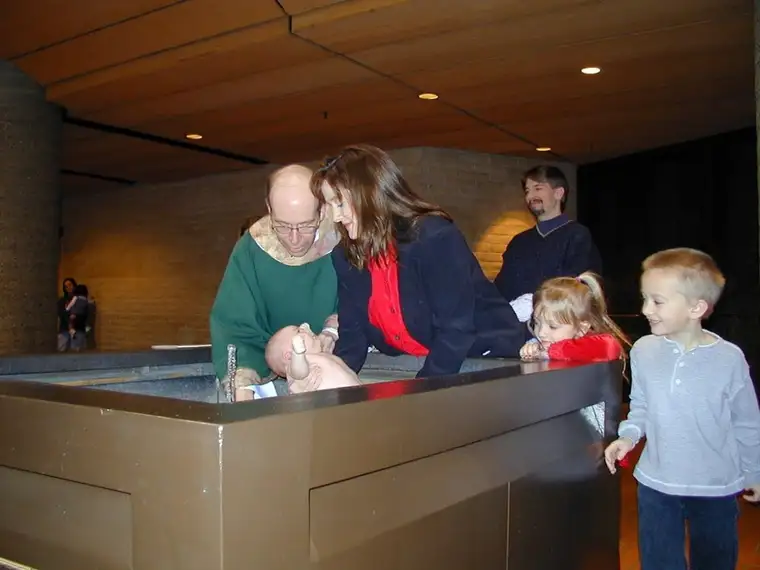

My 6-year-old has been contemplating all week what kind of pie he will choose. After some serious weighing of options, he’s finally settled on chocolate; French silk to be exact. Though I wish I could say I’m the kind of mother who bakes homemade pies, I’m afraid that isn’t true. Not in this phase of my life, anyway. Though, if asked, my father would tell you his youngest daughter is a “helluva pie maker.” I started making pies in high school because my mother didn’t have time for it, and now I know what she was up against. So, for now, the local Village Inn does the honors.
This is a roundabout way of sharing with you a tradition we’ve instituted in our home to commemorate the anniversary of our kids’ Baptisms. When the date rolls around, the child whose turn is up next decides on his or her pie of choice. They also get to request a favorite main entree, and we light the same candle that was lit on their Baptism day and say a special prayer for the child of honor. We keep it simple, but it’s a tradition the kids have come to enjoy. And while that probably has a lot to do with the pie, I think they also know, in their own age appropriate way, that we are recalling an event of initiation every bit as special as their birthday.
In my own family of origin, Baptism anniversaries were not celebrated. I didn’t even know until Confirmation in high school who my Godparents were. They weren’t in attendance at my actual Baptism because it was too far a drive from North Dakota to our home in Wyoming. Another relative was there in their stead, acting in absentia for them. I don’t blame my parents, though. In the case of my father, he grew up in a large family and they barely paid mind to birthdays, not to mention something like a Baptism anniversary. We borrow some traditions from our family of origin. Others, we start on our own.
So, tomorrow’s the day. I look at this photo, taken January 19, 2003, and it warms my heart.

Though I probably was a nervous wreck on the actual day, you can’t really see that here. Instead, you see a chubby baby being immersed by his mother in warm water, a priest preparing to bless him, and his older siblings looking on excitedly. I think that’s my favorite part of the photo: brother running around to get a better look, and sister (with painted fingernails) gazing in on her newest sibling with love. (Daddy’s in there, too, in the back, probably trying to keep the 3-year-older sister at bay.)
{kind=link}
After Mass that day, we had a gathering at our home for friends and family. Our little lamb slept the whole duration while his Godparents and others took turns holding him. Children ran up and down the stairs of our home chasing and laughing; a spread of breakfast bake, orange juice punch and cake was laid out and enjoyed; lively discussions with the priest, Fr. Laliberte, ensued. But perhaps the most excitement took place towards the end of party when our oldest screamed from the lower level that he’d lost his first tooth. It was a “first” for more than one of our children that day.
Even though Adam has absolutely no memory of his Bapstism, that day marked the beginning of something that will affect him the rest of his life; something we view as eternally significant. A seed of faith was planted. We and his Godparents have taken on the challenge to add sunshine and water so that that faith can grow as he does. We might not do this perfectly, but this yearly anniversary event helps remind us of its importance, bringing us back to that day when the spiritual life of our son was set in motion.
Adam, tomorrow’s almost here. Soon, you’ll be enjoying your fried chicken and pie, and yes, I promise to let YOU blow out the candle this time.